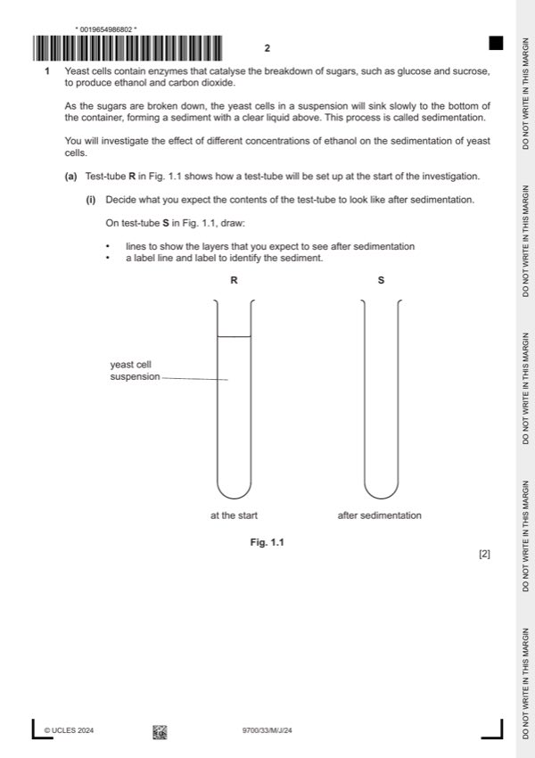

Question 1

Original paper page 2
Part 1(a)(i) — solution
1 one line drawn on test-tube S at the same height as the line at the top of test-tube R ; 2
Mark points
- Include the ideas shown in the solution above.
Part 1(a)(ii) — solution
1 states three additional concentrations of ethanol ; 2
Mark points
- Include the ideas shown in the solution above.
Part 1(a)(iii) — solution
1 heading for independent variable: percentage concentration of ethanol ; 5
Mark points
- Include the ideas shown in the solution above.
Part 1(a)(iv) — solution
states a conclusion with reference to the concentration of ethanol and height of sedimentation ; 1
Mark points
- Include the ideas shown in the solution above.
Part 1(a)(v) — solution
states whether supports or rejects the hypothesis and explains how results provide evidence ; 1
Mark points
- Include the ideas shown in the solution above.
Part 1(a)(vi) — solution
1 from candidate’s results states the concentration of ethanol that caused the most sedimentation at 20 minutes ; 3
modifications
Mark points
- Include the ideas shown in the solution above.
Part 1(a)(vii) — solution
identifies a source of error, e.g. the test-tubes were not left for the same length of time ; 1
Mark points
- Include the ideas shown in the solution above.
Part 1(a)(viii) — solution
systematic and no effect on the trend ; 1
Mark points
- Include the ideas shown in the solution above.
Part 1(b)(i) — solution
1 label on x-axis: source of carbohydrate and each bar labelled with a substrate 4
and
label on y-axis: percentage ethanol produced per 100 g of carbohydrate ;
Mark points
- Include the ideas shown in the solution above.
Part 1(b)(ii) — solution
any two from : 2
Mark points
- Include the ideas shown in the solution above.
Part 1 — solution
the optimum pH for S. pombe not the same as for S. cerevisiae ;
Mark points
- Include the ideas shown in the solution above.